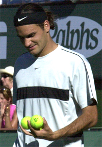

← Bài trước: When Momentum is Against You | 🏠 Mental Game Trang chủ | Bài tiếp: → When Momentum is Totally Against You
Khi Động Lực Trung Tính
Thư Viện Kiến Thức Quần Vợt Toàn Diện — Cơ Bản, Phân Tích Kỹ Thuật, Thư Viện Tham Khảo, và nhiều hơn nữa
Khi Động Lực Trung Tính
Bởi Alistair Higham
Động lực trung tính có thể tạo ra những trận đấu hấp dẫn nhất.
Cho đến nay, chúng ta đã xem xét khái niệm về Động lực, và cách phản ứng khi động lực có lợi cho bạn, và khi nó hoàn toàn có lợi cho bạn. (Nhấn vào đây.) Trong bài viết này, hãy cùng xem xét giai đoạn thứ ba của động lực: Khi Động lực Trung Tính. Động lực trung tính có nghĩa là mọi thứ đang cân bằng - thước đo đang chờ được nghiêng về một bên hay bên kia. Đây có thể là một cảm giác khó chịu hoặc hấp dẫn, vì mọi thứ có thể nghiêng về một phía hay phía kia. Đây là cơ hội mà những tay vợt hàng đầu nắm bắt bằng cách bước lên và giành chiến thắng.
Khi động lực trung tính, mức độ chơi và năng lượng của hai tay vợt là như nhau. Một số trận đấu thú vị và đáng nhớ nhất xảy ra khi động lực trung tính với những tay vợt đang ở mức tốt nhất và tham gia vào một cuộc đấu tranh kịch tính. Không khí có thể sôi động với hy vọng, sợ hãi và mong đợi. Điều này đã xảy ra trong một trận đấu Davis Cup mà tôi đã chứng kiến vào năm 1999, Anh Quốc gặp Hoa Kỳ.
Tỷ số trận đấu là hai trận thắng cho mỗi bên và trong trận đấu cuối cùng, Greg Rusedski và Jim Courier đang hòa nhau 2-2. Khi trận đấu thứ năm bắt đầu, sự cân bằng tiếp tục. Khán giả đang ở mức nhiệt độ cao, khán giả truyền hình tăng lên, và những tay vợt trở thành những chiến binh hơn là những tay vợt.
Động lực cũng trung tính khi những tay vợt đang đấu tranh và cảm nhận lẫn nhau.
Courier nói rằng anh ấy đối mặt với sự ủng hộ lớn từ khán giả cho Rusedski bằng cách tưởng tượng mình đang ở trong một chiếc thuyền buồm trong một cơn bão với những sóng vỗ vào, nhưng công việc của anh ấy chỉ đơn giản là tiếp tục buồm. Courier và Hoa Kỳ đã tiếp tục giành chiến thắng, nhưng theo Peter Fleming, người bình luận truyền hình, thể thao quần vợt cũng đã giành chiến thắng. Động lực trung tính hiếm khi hấp dẫn như trong quần vợt vì những tay vợt không có đồng đội và không có giới hạn thời gian để cắt ngắn trận đấu.
Vào những thời điểm khác, động lực trung tính có thể ít hấp dẫn hơn. Nó có thể trông như thể không có gì xảy ra trong trận đấu, giống như hai người đấm bốc đang đấu tranh. Tại các trận đấu bóng đá (Mỹ gọi là bóng đá), khán giả im lặng khi động lực trung tính như vậy và những tay vợt đang truyền bóng mà không có ý định tấn công rõ ràng.
Động lực trung tính có thể trông như vậy ở đầu trận đấu, khi những tay vợt cảm nhận lẫn nhau. Nhưng nó cũng có thể xảy ra vào giữa trận đấu, khi không tay vợt nào có thể tìm thấy nhịp điệu của mình, và trận đấu đầy lỗi lầm từ cả hai tay vợt (như khi không tay vợt nào có thể giữ được điểm giao bóng). Ví dụ, có thể có động lực trung tính khi trận đấu 2-2 trong set thứ hai, mặc dù một tay vợt đang dẫn trước một set. Điều này không hấp dẫn như động lực trung tính ở 5-5 trong set cuối.
Đừng Chờ Đợi
Nhưng bất cứ khi nào động lực trung tính xảy ra, đây là lúc có cơ hội để vượt trội, cơ hội có thể được tạo ra hoặc nắm bắt. Khi động lực trung tính, bạn cần sẵn sàng để nắm bắt nó. Tay vợt chờ đợi trong tình huống này giống như một người chạy nước rút chờ đối thủ hét "bắt đầu". Bạn phải luôn sẵn sàng để thiết lập một dòng chảy động lực có lợi cho mình.
Động lực trung tính mang lại cơ hội để nắm bắt cơ hội.
Nếu bạn chờ đợi đối thủ làm gì đó, có thể bạn sẽ kết thúc bằng việc nâng cao trò chơi của mình quá muộn để giành chiến thắng set. Vào những ngày trước đây, có thể chờ đợi hơn, hy vọng đối thủ sẽ cố gắng nắm bắt động lực trước và mắc lỗi. Những ngày này, câu nói "người do dự sẽ bị mất" phù hợp hơn.
Bạn thường nghe nói về những tay vợt gần như giành được một trận thắng bất ngờ, sau đó an ủi bản thân với suy nghĩ rằng không có gì họ có thể làm khi đến lúc đó, vì đối thủ đã có được thành quả. Thường thì điều này là vì họ đã chờ đợi điều gì đó xảy ra.
Nắm Bắt Nó
Khi động lực trung tính, những tay vợt hạng cao thường nâng cao trò chơi của mình, được thúc đẩy bởi nhận thức rằng họ phải hành động trước khi quá muộn. Nhưng bạn nên làm gì để nắm bắt nó? Bạn nên làm gì để nâng cao trò chơi của mình? Bạn nên hành động như thế nào?
Có thể là chiến thuật, bằng cách tập trung vào các chiến thuật cụ thể mà bạn đã thảo luận với huấn luyện viên trước trận đấu. Đôi khi, nếu đối thủ trông như đang lo lắng, nắm bắt động lực có thể có nghĩa là cho họ thấy bạn sẵn sàng đấu tranh và chơi mọi quả bóng bằng cách chơi quần vợt theo tỷ lệ.

Thái độ đúng là rất quan trọng để vượt trội khi cơ hội đến.
Mặt khác, có thể có những lúc mà quần vợt theo tỷ lệ không đủ. Gần đây, tôi đã là đội trưởng sân cho Anh Quốc khi chúng tôi gặp Tây Ban Nha trong bán kết của Giải vô địch Châu Âu. Chúng tôi thua trong set cuối cùng của trận chung kết đôi. Chúng tôi đã chơi ở mức độ cao sẽ đánh bại hầu hết các đội. Nhưng khi động lực trung tính, chúng tôi không tìm thấy mức độ quần vợt tuyệt vời mà Tây Ban Nha tìm thấy. Chúng tôi bị sốc. Đôi khi bạn cần hơn quần vợt theo tỷ lệ. Bất kể bạn làm gì, hãy quyết định nhanh chóng và làm điều đó. Giữ tương lai trong tay mình.
Sẵn Sàng Trước Khi Bắt Đầu
Để nắm bắt cơ hội để vượt trội yêu cầu bạn phải sẵn sàng tinh thần để làm như vậy trước khi trận đấu bắt đầu.
Điều này đặc biệt đúng nếu bạn đang chơi với một đối thủ mà bạn không mong đợi sẽ đánh bại. Bạn phải sẵn sàng tinh thần để đâm vào nếu cơ hội của động lực trung tính đến. Đừng chờ xem điều gì sẽ xảy ra, vì cơ hội sẽ biến mất nhanh chóng đối với những tay vợt tốt hơn. (Nếu bạn không thích ý tưởng đâm vào, bạn luôn có thể đẩy họ xuống vực hoặc lấy con bò bằng sừng!)
Một cụm từ được sử dụng bởi huấn luyện viên cũ của Tim Henman, David Felgate là "bước lên tấm bảng". Điều này xuất phát sau khi Tim thua nhiều trận đấu trước những tay vợt tốt hơn trong sự nghiệp của mình và dường như hài lòng với việc đã chơi tốt. David cảm thấy anh ấy chưa bao giờ thực sự trong trận đấu như một người cạnh tranh nghiêm túc khi những khoảnh khắc quan trọng đến. Điều này đã thay đổi và kết quả của Tim đã cải thiện.
Khi động lực trung tính, bước lên và đâm vào.
Quay Lại và Tiến Về Phía Trước
Nắm bắt tình huống có thể chỉ đơn giản là khuyến khích bản thân mình để tiến về phía trước để giành chiến thắng khi bạn đã rút lui từ việc bị đứng sau. Rất thường bạn sẽ thấy một tay vợt quay lại và cân bằng điểm, chỉ để thư giãn và thua set.
Có nhiều ví dụ về những tay vợt đã thay đổi trò chơi của mình hoặc tái kích động nỗ lực của mình khi họ bị đứng sau, nhưng khi họ cân bằng điểm số, họ nghĩ rằng công việc đã hoàn thành và thư giãn tinh thần đấu tranh. Năng lượng của họ giảm và họ mất động lực.
Mặt khác, tay vợt dẫn đầu có thể thư giãn khi đối thủ quay lại và cân bằng điểm, vì những nỗi sợ hãi của họ đã được thực hiện. Đôi khi điều này giải phóng căng thẳng, đôi khi nó khiến họ tức giận. Dù thế nào đi chăng nữa, năng lượng và tinh thần đấu tranh của họ thường tăng lên.
Sự thay đổi năng lượng trên sân từ một hoặc cả hai tay vợt là lý do tại sao động lực có thể chuyển đổi lại, và tay vợt đã quay lại có thể thua. Vì vậy, nếu bạn là tay vợt đấu tranh để cân bằng điểm, hãy quyết tâm tiếp tục đấu tranh và vượt trội. Hãy nhận thức rằng trò chơi khi điểm số cân bằng là quan trọng nếu bạn muốn giành chiến thắng. Đừng cân bằng điểm và chờ xem điều gì sẽ xảy ra - quay lại và sau đó tiến về phía trước!
Alistair Higham là Giám đốc Quản lý Quốc gia của Phát triển Huấn luyện viên cho LTA, cơ quan quản lý quần vợt ở Anh Quốc. Ông là tác giả của Momentum: The Hidden Force in Tennis. Alistair là một tay vợt chuyên nghiệp trước đây và vẫn tiếp tục thi đấu thành công ở các cấp độ cao nhất của quần vợt địa phương Anh. Ông đã phát triển và huấn luyện hàng chục tay vợt trẻ hàng đầu, và đã du lịch rộng rãi trên mạch quốc tế trẻ, nơi ông đã có cơ hội đặc biệt để nghiên cứu lực lượng ẩn giấu mà quyết định rất nhiều trong kết quả của các trận đấu quần vợt cạnh tranh.

Momentum: The Hidden Force in Tennis Alistair Higham
Đọc quan điểm quan trọng mới này về động lực và phát triển trò chơi tinh thần, bởi huấn luyện viên hàng đầu Anh Alistair Higham. Dựa trên quan sát của ông về hàng nghìn trận đấu cạnh tranh cũng như sự nghiệp chuyên nghiệp của mình, cuốn sách này sẽ đưa bạn vào quan điểm và công cụ để tạo ra động lực trong các trận đấu của mình và đối mặt với các điểm chuyển đổi quan trọng mà là sự khác biệt giữa thắng và thua.
Nhấn vào đây để Đặt hàng!
Nguồn: tennisplayer.net lưu trữ — When Momentum is Neutral.docx (Thư viện giảng dạy của John Yandell, 2002-2022). Trích xuất và hiển thị dưới dạng HTML cho Tennis Future Lab.